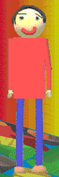
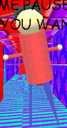

"Daniel" is the main character and antagonist in "Daniels Favourite Colour Game!"(/"DFCG"). He replaces Baldi/Arts and Crafters.
Aliases
Daniel, Dan, Faceless Freak.
Appearance
(DFCG) Daniel appears as a poorly modeled human, he has short black hair, skinny arms, long legs, a very happy expression, fingers, and ball-shaped shoes. He wears a red shirt, blue paints, and brown shoes. He has long black eyebrows and his nose is yellow for an unknown reason. His appearance is somewhat inconsistent.
(MBIBLM) Daniel appears as a very poorly modeled, faceless human. He has spikey black hair, a large head and body, sort arms, misshapen yet long legs, and ball hands. He wears a red shirt and blue paints.
Gallery
Daniels Favourite Colour Game!

Moldy's Basics In Being Le Modder

Trivia
Daniel has a robot suit he sometimes wears to scare people.
Daniel's favorite "colour" is orange.
Daniel's voice is never heard, instead he speaks in text bubbles.
Daniel gets along well with most people but is only really friends with the rest of his gang and Moldy's gang.